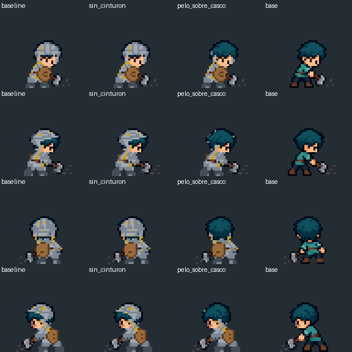

Herramienta, daño, caída y dormir. Candidato de arte y composición, probado en Godot; pendiente integración al juego.
Frente / derecha / espalda / izquierda. Caída y dormir no definen tiempos ni eventos del juego.
Cinturón visible y pelo bajo casco. Mano lejana detrás del torso, cercana delante. En herramienta, escudo junto al torso, sin atribuirle una mano libre que no se ve.
